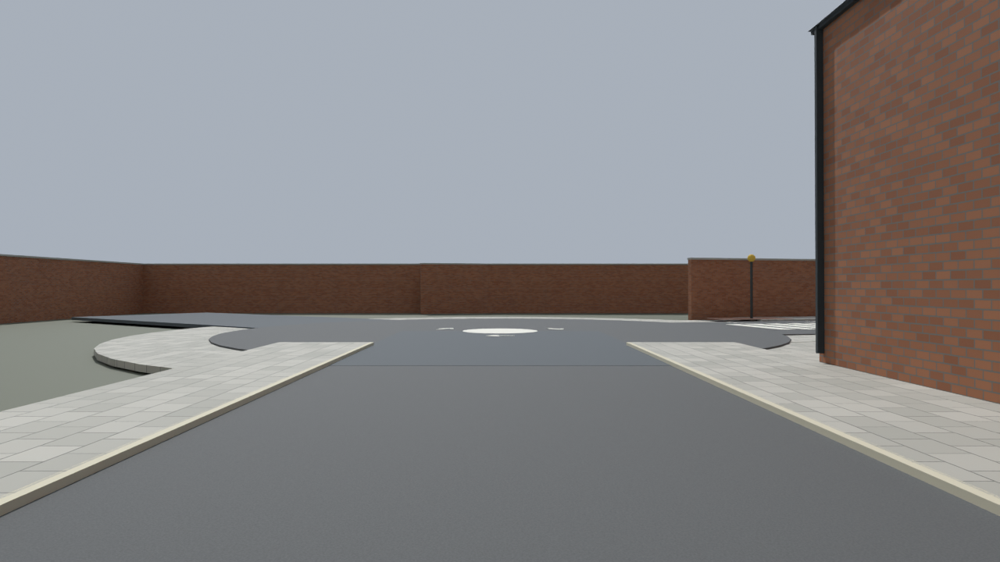
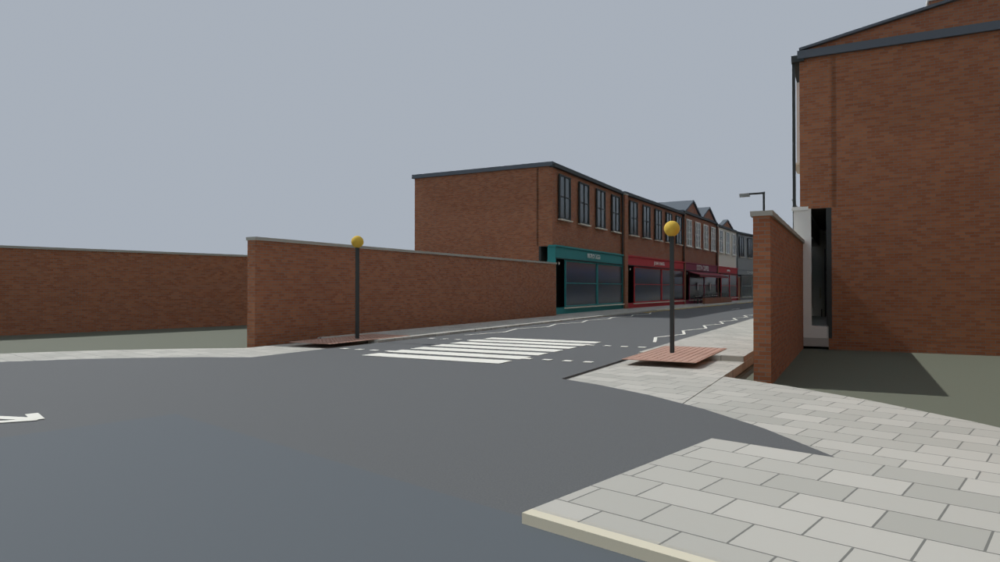
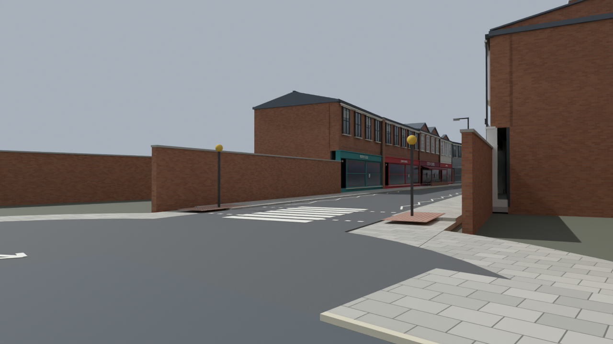
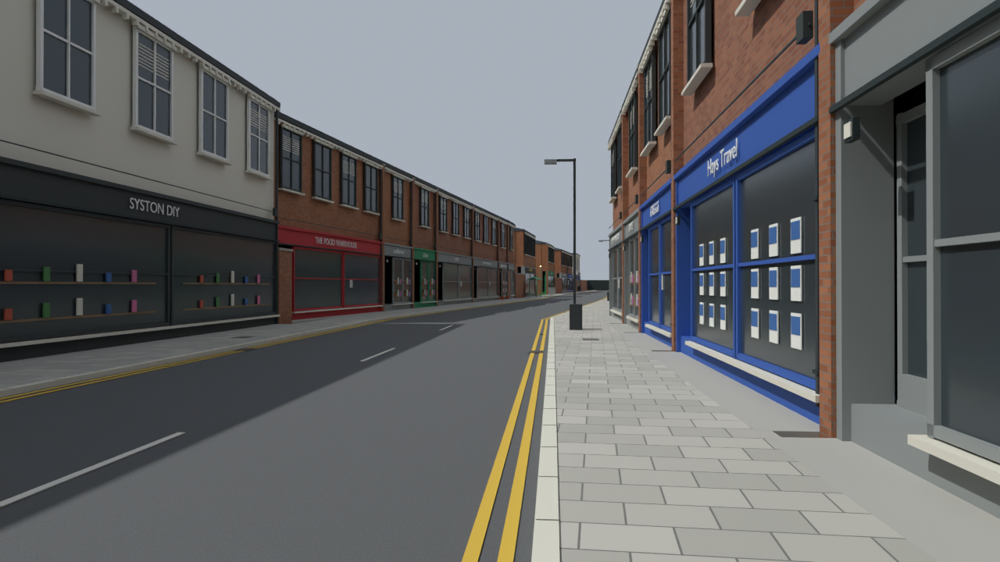
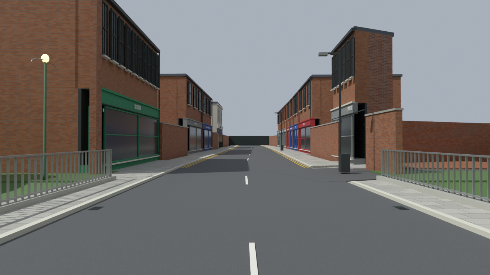
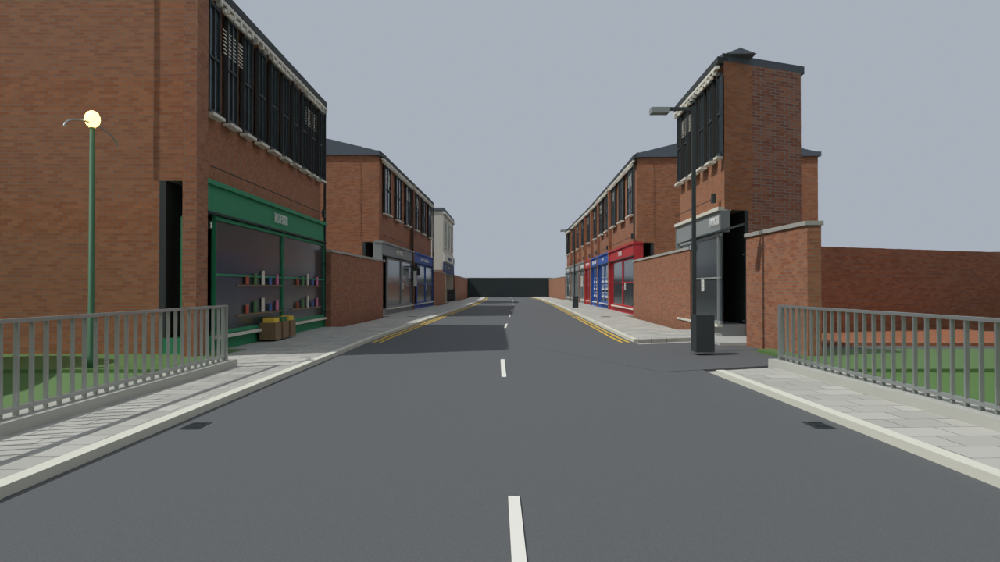
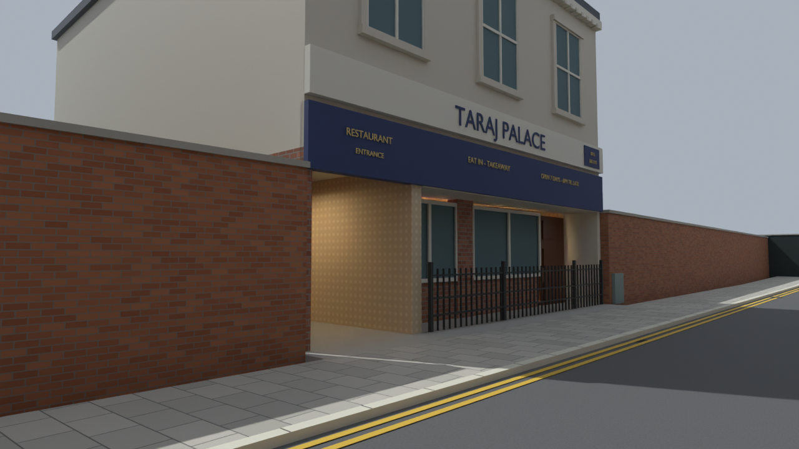
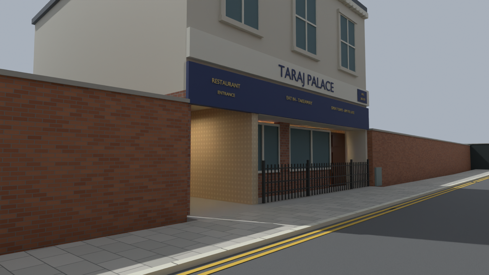
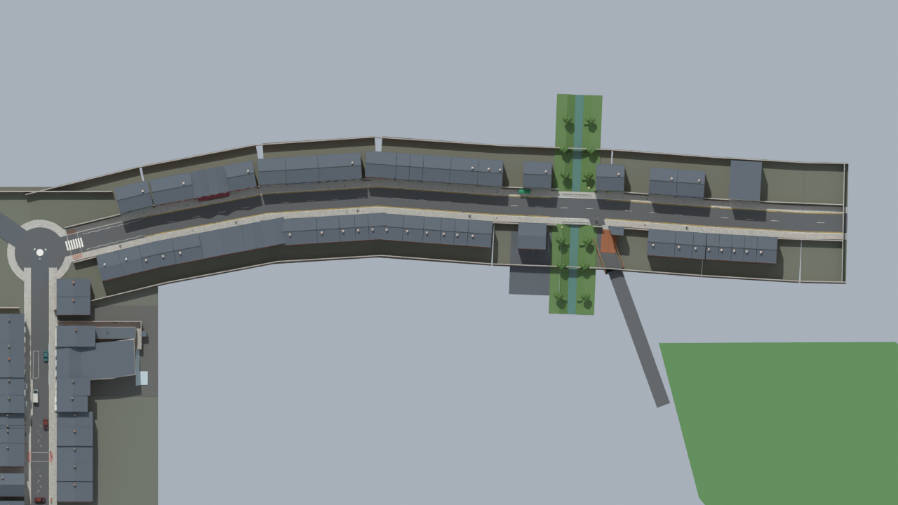

2,860 closed detail meshes across 46 existing frontages. Roofs/chimneys, cornices/blinds, shop listings/displays, barber poles, flower tubs and produce crates. Street plan and interiors retained.
3,429 road samples and 572 pub/alley samples pass. Blender geometry review only; BO3 unchanged. All 10,217 parent meshes and 44 reference hashes preserved.








